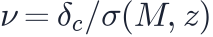
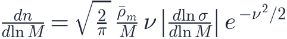
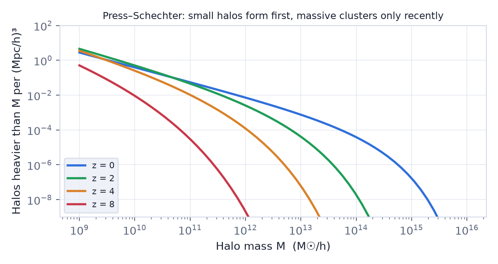
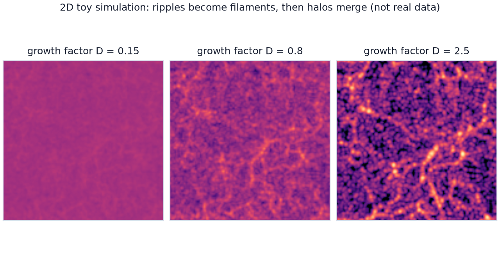

In this lesson you will learn
|
From linear ripples to bound objects
Linear theory (lesson L5.3) works while density contrasts are small. Eventually the densest regions reach and something new happens: they detach from the expansion and collapse under their own gravity.
Spherical collapse
Picture a slightly overdense sphere in an Einstein–de Sitter universe. It behaves like a small closed universe inside the larger one (lesson L2.3):
- At first it expands with the universe, but more slowly.
- It reaches a maximum size (turnaround) and starts to fall back.
- It collapses. In reality the matter does not reach a point: particles pass through the centre and exchange energy until the halo settles into virial equilibrium, where kinetic and gravitational energy balance.
Two famous numbers come out of this model:
- A region collapses when its linear density contrast, extrapolated with linear theory, reaches
- The final halo is about 200 times denser than the average universe (178 in the simplest model). This is why halo masses are often quoted as , the mass inside a sphere 200 times denser than the critical density.
A simple rule Take the linear density field, smooth it on the scale of a halo, and look for regions where it exceeds 1.686. Those regions have collapsed into halos of that mass. This simple rule works remarkably well. |
Bottom-up: small things first
How strongly the density fluctuates depends on the smoothing scale. Using the power spectrum of lesson L5.4, the typical fluctuation is larger for smaller masses. In cold dark matter:
- small halos reach first;
- they later merge into larger halos, which merge again;
- galaxy clusters, the largest objects, are still forming today.
This is hierarchical or bottom-up structure formation. The opposite "top-down" picture, where huge pancakes form first and fragment, applies to hot dark matter such as fast neutrinos, which erase small-scale fluctuations. Observations of galaxies at very high redshift and of the cosmic web rule out hot dark matter as the main component.
When do typical halos form? For Planck 2018 parameters, typical (one-sigma) halos of formed around
redshift 3, Milky Way–sized halos of around redshift 0.4, while
cluster-sized halos of |
Counting halos: Press–Schechter
In 1974 William Press and Paul Schechter turned this idea into a formula for the halo mass function, the number density of halos of each mass. With

:
The exponential makes massive halos extremely sensitive to  : a small change
in
: a small change
in  or changes the number of massive clusters enormously. Counting
clusters is therefore a powerful cosmological test.
or changes the number of massive clusters enormously. Counting
clusters is therefore a powerful cosmological test.

Refinements Press–Schechter captures the physics but underpredicts massive halos by a factor of a few. Later versions (Sheth–Tormen, Tinker) are calibrated on simulations and are accurate to a few percent. |
Try it: Halo Mass Function Explorer Switch between Press–Schechter and Sheth–Tormen and compare them at 10¹⁵ M☉/h. Then raise σ8 by ten per cent and count the clusters on the sky. |
Haloes are only half the story: lesson L5.8 follows the gas that falls into them and becomes galaxies.
N-body simulations
Beyond simple models, cosmologists simulate the universe directly. An
N-body simulation represents dark matter by  particles,
each weighing millions to billions of solar masses:
particles,
each weighing millions to billions of solar masses:
- Initial conditions: particles are placed on a grid and displaced slightly using the linear power spectrum at high redshift (the Zel'dovich approximation).
- Gravity: the force on every particle is computed, efficiently, with particle-mesh methods using fast Fourier transforms, or with tree codes.
- Time steps: particles move and the force is recalculated, thousands of times.
- Analysis: halos are identified as dense groups of particles.

Milestones
|
The cosmic web
Simulations explain the pattern seen by redshift surveys (lesson L1.4). Matter first flows out of voids onto flat sheets, then along the sheets into filaments, and finally along filaments into halos at their intersections. Galaxies form inside halos, where gas can cool and form stars.
Try it: 2D N-body Structure Formation Run the N-body simulator to D = 3. Watch sheets and filaments appear first, then small clumps that merge into bigger ones. Try warm dark matter with the same seed. |
Small-scale puzzles On galaxy scales, simulations with only dark matter predicted more satellite galaxies and denser halo centres than observed ("missing satellites" and "cusp–core" problems). Including the effects of supernovae, gas physics and faint-galaxy discoveries has resolved much of this, but it is still debated whether dark matter might be warm, self-interacting or fuzzy. |
Remember this
|